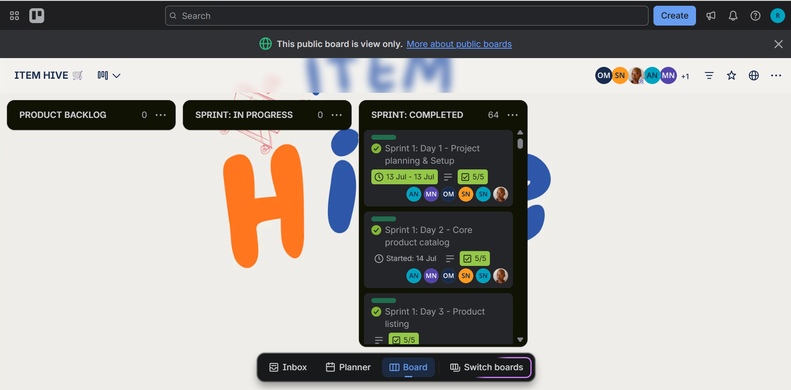
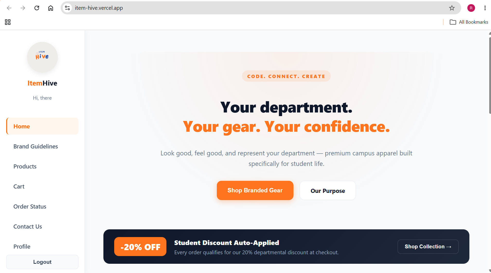

Evidence: Trello Activity + GitHub Commits + 18:00 Standups



Trello: jMjTyQX1 - Activity shows Y/T/B | Live: item-hive.vercel.app - 12 deploys
- Day 1 18:00 - Yesterday/Today/Blockers logged
- Day 2 18:00 - US1-US3 moved to Done, supplier blocker resolved
- Day 3 18:00 - US4-US5 complete, R120-R240 validation tested